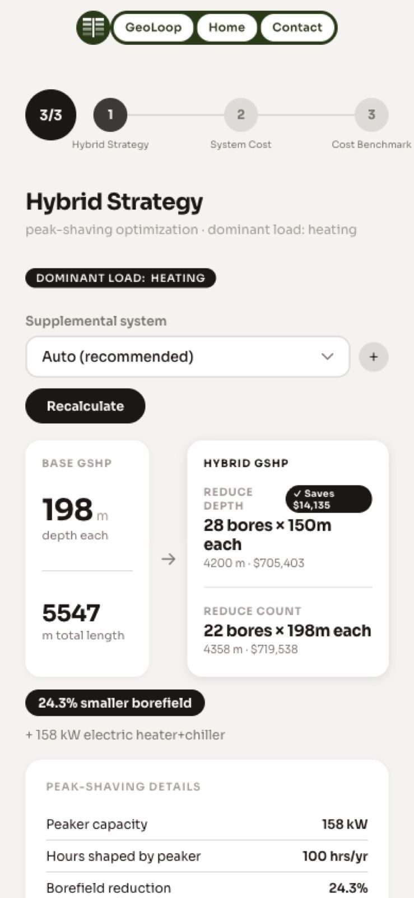
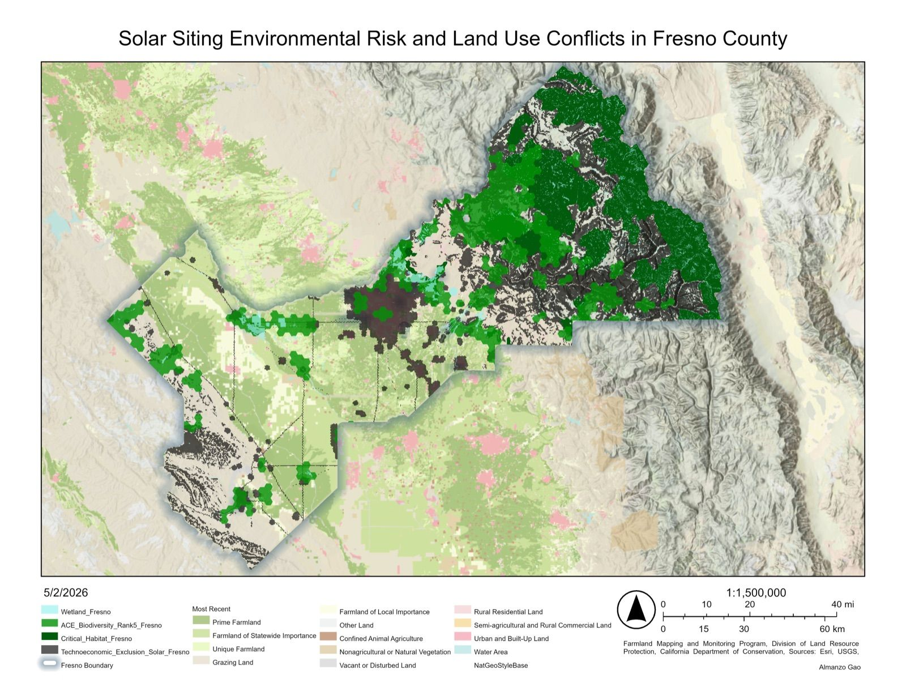

Stanford CEE 299 · Advisor Peter Rumsey, P.E. · 2026
GeoLoop
GeoLoop answers one question for a building owner. Is a ground source heat pump feasible here? You enter a ZIP code and a building type. The tool returns a scored feasibility report in under 30 seconds. That analysis usually takes days.
How it works
- Site: geocodes the ZIP code and looks up soil thermal properties.
- Simulation: loads EnergyPlus prototype loads for the building type and climate zone.
- Loads: converts them into three-pulse ground loads.
- Sizing: sizes the borefield with the ASHRAE method of Philippe et al. (2010).
- Cost: applies a nine line-item cost model with regional drilling rates by state.
- Strategy: tests hybrid systems with load duration curves and sizes a peaking unit.
- Report: gives a 0 to 100 feasibility score and the payback.

The strategy step compares the base borefield with a smaller hybrid design.
Results
- 840 EnergyPlus runs across 16 building types, 16 ASHRAE climate zones, and 21 envelope variants feed the load tables.
- 405 test cases pass against published reference spreadsheets.
- For a 50,000 sf office in Chicago, a GSHP with the 30% IRA tax credit has the lowest 20-year life cycle cost. It costs $1.16M against $1.47M for a gas boiler, with 2.3x lower CO₂ intensity.
I reviewed the method with my advisor, Peter Rumsey, P.E. We refined the drilling cost structure, the peak-shaving logic, and the thermal balance strategy.
ArcGIS StoryMap · Stanford CEE 276M · April 2026
Where the Power Goes in Fresno County
I built this StoryMap for CEE 276M, Spatial Mapping for Giga-Scale Renewables and Transmission. It asks where solar can go in Fresno County. It also asks where each option conflicts with land use and equity.
What the story covers
- Environmental burden by census tract from CalEnviroScreen 4.0. The highest scores cluster in the urban core of Fresno.
- How the county generates power today, from gas and from renewables.
- How much solar resource is in use near each substation.
- Where solar siting conflicts with farmland, critical habitat, wetlands, and biodiversity areas.

Solar resource utilization, with substations and candidate solar areas.

Environmental risk and land-use conflicts for solar siting.